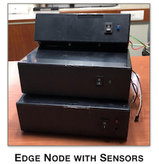
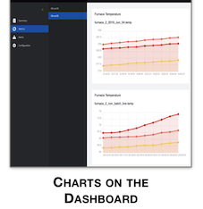

Furnace Temperature Monitoring
Solution
 We have a temperature monitoring system currently in production, deployed on furnaces at an abrasives manufacturer in India. Monitoring of the actual temperature in the furnace and acting quickly in the case of any power failures, are crucial to ensure high product quality and to minimise defects.
We built a fault tolerant custom daughter card or, sensor module that monitors and digitises the raw temperature from the various zones of the furnaces.
An edge node reads, cleans the data and, generates intelligent alerts based on the configured temperature program.
 Our gateway agent securely connects to our remote cloud backend and transmits the data. The gateway also interacts directly with the dashboard to get new configurations for the edge application.
The data and the alerts from the runs are automatically collated into batches and are available for review at a dashboard. The dashboard is accessible from the desktop or mobile browsers. The alerts can be setup to be forwarded to users on email or SMS messages.
Apart from displaying the data, the dashboard also provides support to configure the edge application directly from the web.